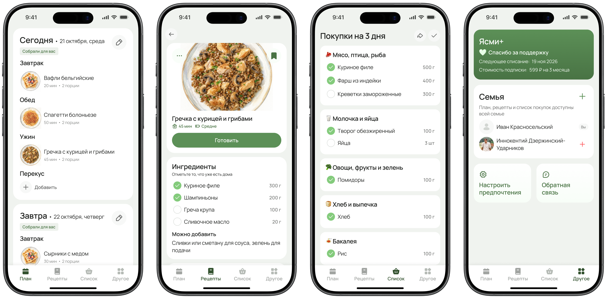

Yasmy: from saved recipes to a ready-made meal plan
I researched meal planning, designed the user flows and interface, and worked with my partner to bring the Telegram Mini App and bot to a beta with its first users.
Open Yasmy in TelegramAbout the project

About the product
Yasmy suggests a menu, lets users replace dishes, and creates a shopping list. The goal is to make everyday meal choices easier.
The meal plan, recipes, and shopping list work in a Telegram Mini App and bot. Shared access and the subscription shown on the cover are still in development.
My role
I lead research, product strategy, information architecture, UX/UI, and frontend development with Codex, with occasional backend work. My partner handles the main backend and server. We work evenings and weekends without external funding.
Context
Whenever food ran out, I searched for recipes again, discussed dinner with my partner, and put together a grocery order. I wanted to open a ready-made suggestion and adapt it to my needs.
Initial concept
I initially designed a recipe library with a meal planner:
- 01save a recipe
- 02make a meal plan
- 03get a shopping list
Existing apps did not make me want to return. I decided to explore what other people needed and how they already handled this task.
survey: what to explore further
Goal. Understand meal planning difficulties and habits, and select topics and participants for interviews.
Who I surveyed and how
Online survey, January 2026. Recruitment through chats, Instagram, and UX communities. From 69 responses, I selected 50 participants close to the target audience: people who cook at home and face planning difficulties. 33 of 50 plan meals for two.
What I learned
35 of 50 do not know what to cook; 22 feel the difficulties most strongly before cooking. Only three plan a week ahead. In interviews, I explored how meal choices arise and why plans change.
Interview participants described using Telegram. The survey combines it with VK, so I did not measure Telegram usage separately.
Number of participants out of 50. Up to three answers were allowed.
50 participants, one answer each.
Out of 50 participants; multiple sources allowed. Selected options are shown.
- Search engines
- 33 of 50
- Instagram / TikTok
- 27 of 50
- Telegram / VK
- 19 of 50
- Recipe apps
- 3 of 50
Selected sample, N = 50. Bars show the share of 50 participants. This volunteer sample focuses on planning difficulties; results cannot be generalised to everyone who cooks at home.
interviews: how people choose meals
Method. Four research interviews, March 2026. Recruitment from people who left their contact details in the survey. We explored their latest cooking and shopping experiences: the trigger, actions, options, and reasons for their choices.
The next meal decision starts when food runs out
One participant chose the next dish after the last portion; another did so on her way home. They recalled familiar meals and considered tiredness and ingredients at home. A saved recipe does not yet decide what to cook now.
Plans change with circumstances
One participant had stopped weekly planning: she wanted different food, discounts changed her choice of meat, or ingredients ran out. Another did not return to her AI-generated menu. Getting a plan and using it are different tasks.
Not everyone who cooks needs help
One participant was happy with her routine: decisions with her partner, bulk shopping, and a chart on the fridge. Further testing should focus on people who struggle to choose meals or maintain a planning routine.
Existing alternatives
Yasmy competes with the habit of deciding on the go. 19 of 50 participants selected this option in the recipe question. Memory, search, and messaging are always at hand: a new service needs to give people a reason to change that habit.
I tried alternatives myself. Elementaree and Chefmarket meal kits did not give me enough flexibility for breakfasts and my own dishes. I abandoned a recipe app after two entries because manual input was a barrier. This personal experience led to the import hypothesis.
what I changed
A suggested menu replaces the empty planner. Users can swap dishes and change portions. The hypothesis: starting with a suggestion is easier than choosing from scratch.
- 01see a suggested menu
- 02keep the dishes or edit the plan
- 03make a shopping list
The menu is editable
Users can replace dishes and change portions. Automatic filling keeps existing choices and does not restore removed meals. Rebuilding the entire plan replaces manual edits too.
Personal recipes get priority in suggestions. If no suitable dish is available, the slot stays empty: dietary restrictions take priority over filling the menu.

Importing a recipe from a link
Users send a link to the bot, receive a recipe, and add it to the plan. There is no need to copy ingredients manually.
The bot shows that processing is in progress. Users can check and correct the result in the editor.

More recipe actions
The editor lets users change the name, time, portions, and ingredients.


Shopping from the plan
The list covers the entire plan period: four days here. Groceries are grouped by category and can be checked off.
The recording shows the working list. The new design on the cover has not been implemented yet.
Shopping in Telegram
The bot can send the list as a message. It keeps product categories together and includes a Mark all purchased action.
Beta and early observations
We shared the beta with friends and got our first users. We are building shared access next, followed by subscriptions and a wider beta.
I ran initial scenario tests with two participants and found interface comprehension issues. The product's impact has not been measured yet.
What the first tests revealed
The plan period was unclear
Observation. A participant mistook a three-day plan for today's menu.
Change. We added a duration choice to onboarding. The plan itself still has no period label; repeat testing will show whether this change is enough.
Shopping and meal plans do not always cover the same period
Observation. Shopping for tomorrow and stocking up are different tasks. A list covering the whole plan did not always match expectations.
Change and limitation. We labelled the shopping period. A separate duration choice has not been added, so this does not solve a short shopping trip within a longer plan.
Checking off an item should not move its row
Observation. Checked items jumped around the list, making the participant lose track of them.
Change. Checking an item off no longer changes the row order.


Validation status. Repeat testing has not happened yet. I check fixes through daily use; this also helped me find and fix additional shopping bugs.
What I will test next
Can someone choose dinner, replace a dish, and prepare a shopping list without guidance? I will test these scenarios and ask how easy the decision felt. Reduced decision time and effort have not been confirmed yet.